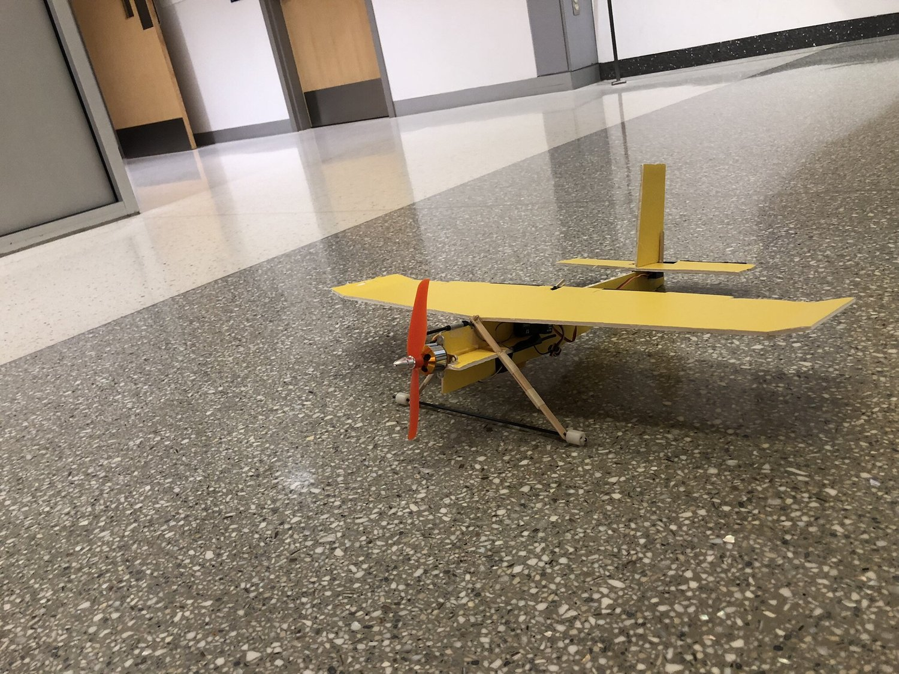
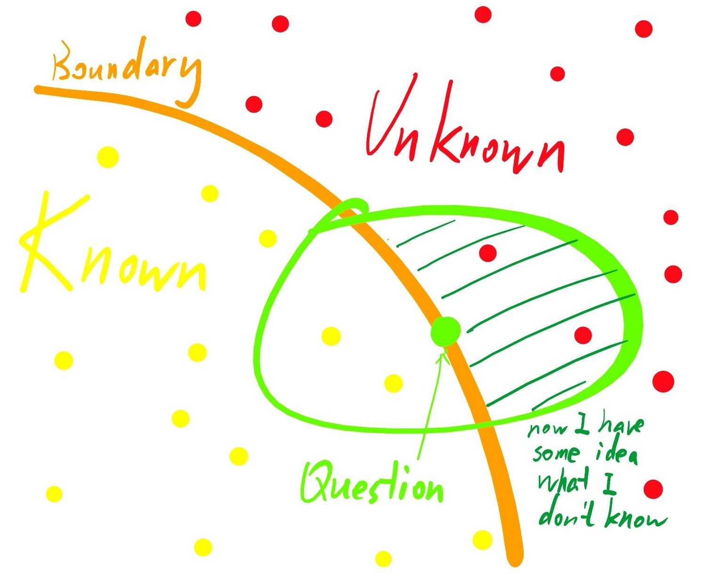
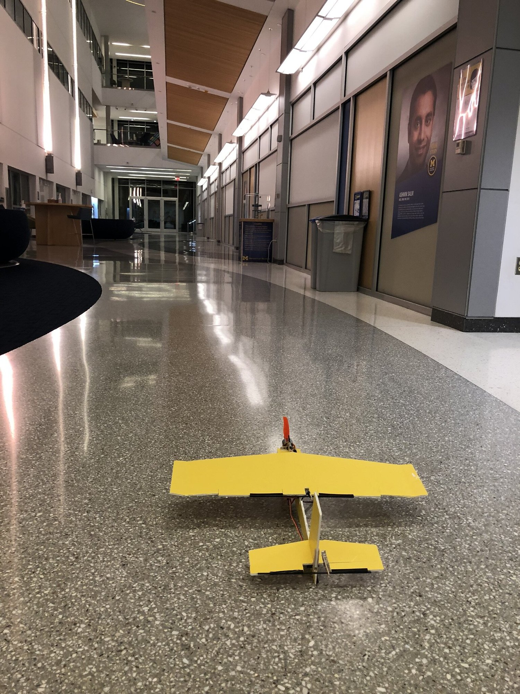
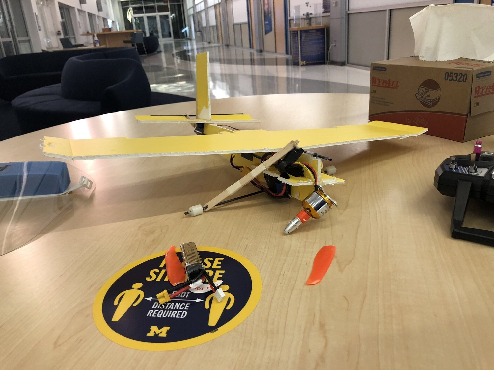

Aristotle and Glider

“The kinds of questions we ask are as many as the kinds of things which we know.”
— Aristotle
Most ornithopter designers failed. Neither did they figure out why they failed. I guessed they didn’t know aircraft dynamics. Neither did they know they didn’t know aircraft dynamics.
Similarly, I don’t know what I don’t know. The kinds of questions I ask are as many as the kinds of things which I know. To have an idea of my ignorance, I shall question (test) myself on the boundary between known and unknown.

For example, to question myself on aircraft dynamics, I made a glider.

Now I know how ignorant I was about aircraft dynamics. I couldn’t figure out why the glider divert to the left.
As by-products, I come to know:
Trim control surfaces. Nothing is balanced.
Always record video. Any flight can be the last flight.
Manipulate safety factors. Always give easiest-to-repair component the lowest safety factor.

Crashed in a good shape. I repaired it within 2 minutes.
Acknowledgement:
Materials provided by UMich Prof. Sridhar Kota.
The crash was later discussed with UMich Prof. Peter Washabaugh.
“Manipulating safe factor” was inspired the concept of “failure management” from UMich Prof. George Halow in 2019 Fall.
Dym, Clive L, et al. “Engineering Design Thinking, Teaching, and Learning.” Journal of Engineering Education (Washington, D.C.), vol. 94, no. 1, Wiley, 2005, pp. 103–20, doi:10.1002/j.2168-9830.2005.tb00832.x.